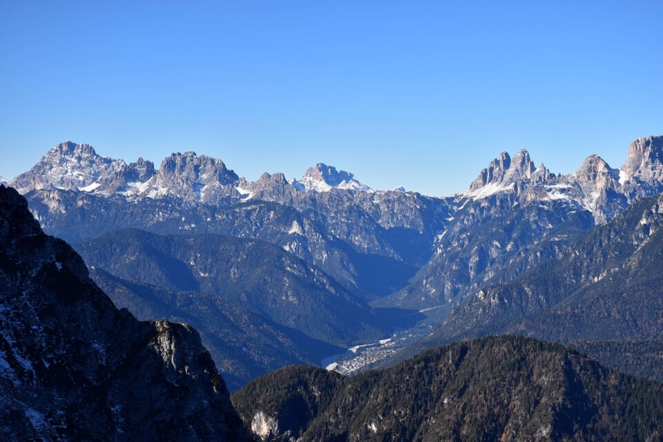

L'anno scorso passando per S. Stefano di Cadore, di ritorno dall'Ajarnola, mi aveva subito attratto quell'orripilante castelletto di mughi e rocce che ho saputo essere la Cima (e Sasso) Malpasso, nel gruppo dei Brentòni.
In seguito l'ho osservato anche dalla cima del Brentòni e dalla cresta dei Crìssin, anche se le foto fatte da così in alto non gli rendono giustizia.
C'incamminiamo in direzione della Federa Mauria: certo che siamo all'ultimo giorno di novembre, che bella idea che ho avuto di una gita gelida tutta a Nord!
Lassù già vediamo le nostre mète.
Le due cime del Pupèra di Valgrande...
...e gli immensi contrafforti dei Crìssin: proprio belli i monti del Comelico, che sto iniziando a frequentare.
La possente mole del Crìssin d'Auronzo, con più a sx le altre due cime del Crìssin: poco più che un mese fa ne ho percorso la cresta.
La casera Federa Mauria, ora splendido bivacco.
Cima Ovest della Cresta Castellati e Pupèra di Valgrande Est.
Tra di loro la forcella Castellati.
Noi c'infiliamo su per il canale erboso che divide i due monti.
Non riesco a distogliere gli occhi dalle bellissime placconate che caratterizzano il versante Nord di tutti i monti circostanti.
Dopo tre di ore di buio e gelo, finalmente il sole!

Arriviamo ad una forcelletta: che bello che non c'è nulla, nemmeno un omino stavo pensando fra me e me... (d'altronde non c'è praticamente nessuna difficoltà né di orientamento né tecnica)
...quando... ma cosa sono quelle cose? Licheni?
Cristo santo!
C'è una tale esagerazione di bolli che va oltre ogni possibile comprensione: sulla cima una quindicina di bolli; che tristezza.
Disgustato dalla cosa non scrivo più nulla, che poi arrivano i verniciatori: almeno nella traversata fra il Sasso e la Cima, che qui si vede in foto, ci siamo potuti sbizzarrire a cercare il percorso seguendo le tracce degli animali. Almeno lì abbiamo potuto godere della gioia dei monti, di cui qui invece c'hanno privato.
Comunque, guarda che bella la tricuspide del Cornòn salito un mese fa con Manuela e Giulio.
Un panorama così bello non me l'aspettavo: Auronzo con tante belle e famose crode dolomitiche.
Scendiamo: potevano fare qualche freccia in più dato che qualcuno è stato capace di sbagliare strada...
Chiaramente i bolli sono stati fatti nel punto sbagliato: la strada giusta è questa bella cengetta che un camoscio ci ha indicato con le sue impronte.
Iniziamo a traversare verso Cima Malpasso.
Splendido, anzi superbo, il Brentòni.
Dettaglio delle tre cime del Brentòni: la cima centrale l'ho raggiunta per cresta, con Ivan e Bruno; fa una certa impressione a guardare giù per le placche!
Il risalto di cresta che divide forcella Brentòni (dx) dalla forcelletta dove inizia il diedro Ovest della cima Brentòni: quella stessa giornata abbiamo esplorato il collegamento, che si vede a metà foto sotto il gradino di roccia, come suggerito da Gaberscik.
Insospettabile, oltre la forcella di Valgrande, la Creta di Mimoiàs.
Il Crìssin: siamo saliti proprio per questo versante alla forcella fra Crìssin di Làggio e Crìssin di Gógna (via normale n.1 del Gaberscik).
Scendiamo per la «via normale», anche qui una porcheria di vernice.


Qualche dettaglio curioso della parete Nord del Brentòni.
Le ultime luci su Danta di Cadore.
Tramonto su Cima Bagni.